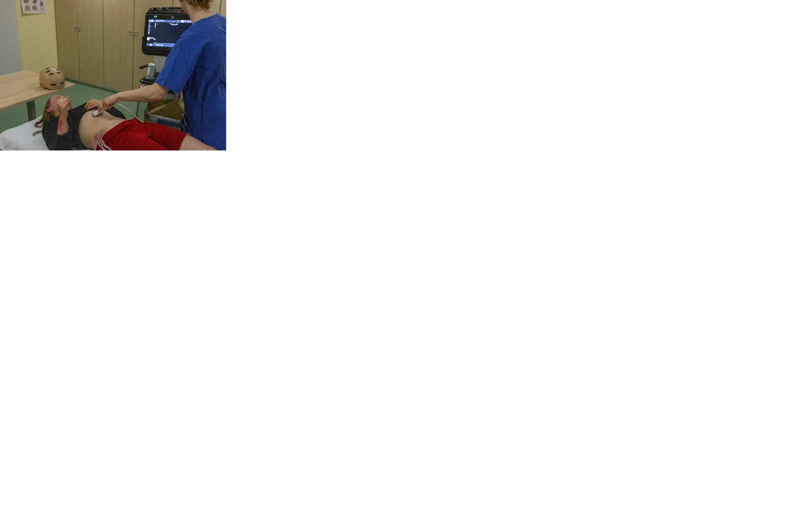

Simulation
Erlebe unser realitätsnahe Simulation einer Zentralen Notaufnahme.

Die Nachtschicht ist eine Simulation für Medizinstudent:innen: Trainiere realitätsnah Anamnese, Diagnostik und den Umgang mit Patienten und Ärzten. Perfekt für Studierende ab dem 7. Semester, die Praxiserfahrung sammeln wollen. Lerne, schnell zu handeln und sicher zu entscheiden – unter Bedingungen, die so nah an der Realität sind wie möglich.
Ein paar Eindrücke aus unseren Simulationen.



Drei Schichten mit jeweils zwei Stunden. Pro Schicht nehmen drei Zweierteams teil.
Jetzt anmelden